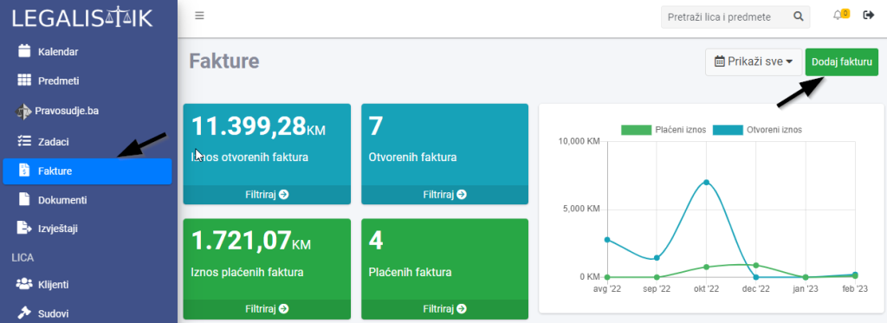
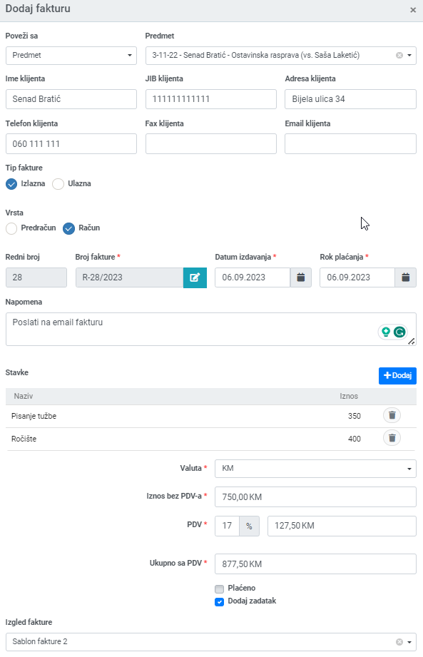
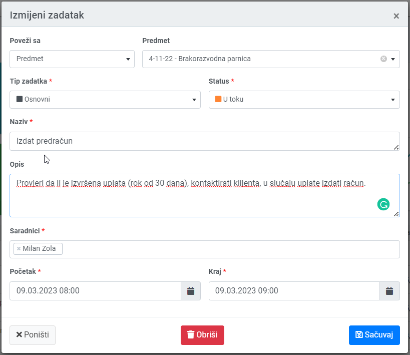

- Fakturu možete napraviti iz samog predmeta, tako što otvorite željeni predmet i u kartici Fakture kliknete na dugme Dodaj fakturu. Ta faktura će biti vezana za taj predmet:

- Takođe, fakturu možete dodati i ako kliknete na link Fakture u meniju na lijevoj strani, pa onda na dugme Dodaj fakturu. Ova faktura može biti vezana za predmet, klijenta ili da bude samostalna:

Nakon toga se otvara novi prozor za unos. Možete birati da li je ulazna/izlazna faktura i račun/predračun:

PDV i ukupna cijena se automatski računaju na osnovu unijetih stavki. Ako ne želite uključivati PDV u cijenu, možete polje PDV postaviti na 0%. Ako ne želite da vam se u budućnosti obračunava PDV na fakturama, možete ga isključiti u meniju Kancelarija, kartica Sistemska podešavanja pa otkačite Dodaj PDV na fakturu.
Ako ostavite Dodaj zadatak opciju zakačenu, nakon što sačuvate fakturu, otvoriće vam se novi prozor, gdje možete staviti podsjetnik u vezi te fakture (da li je poslana, da li je plaćena itd.):
